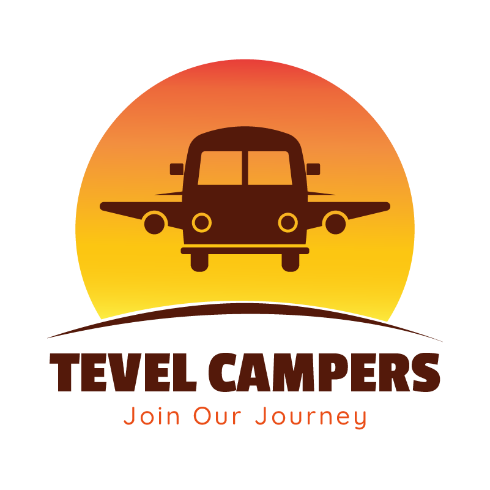
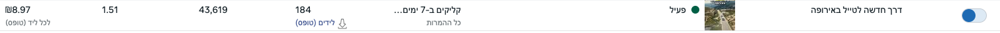
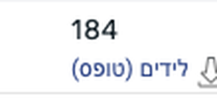
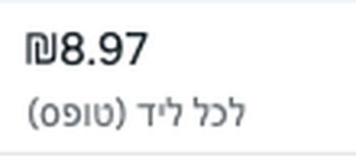

״דרך חדשה לטייל באירופה״
תבל קמפרס - מציעים חבילות של השכרת קרוואן + טיסות לאירופה.


לידים
עלות ללידהתובנה
״חשבתם על טיול באירופה, אבל לא חשבתם על קרוואן.״
מה עומד מאחורי הקריאייטיב
הקריאייטיב הזה פונה לקהל קר, שלא פגש את תבל קמפרס לפני. קודם כל יש כותרת גדולה ומסננת לאורך כל הסרטון - ״טיולי קרוואנים באירופה״. ושמתי דגש על ההוק, שהוא הלב של הקריאייטיב: ״יש דרך נוספת לטייל באירופה״. היא שוברת את המיתוס של חופשה בנאלית באירופה, שזה בית מלון וטיול בעיר, ומגלה להם עולם חדש.
לאורך כל הסרטון השארתי את היעדים שתבל מציעים, כדי לסנן את מי שמחפש יעדים אחרים ולא רלוונטי למותג. במהלך הסרטון אני מרחיבה על החוויה ועל פירוט החבילה, ושמה דגש על הבידול שלהם לעומת המתחרים.
הוויז׳ואל של הסרטון נועד ללוות את המלל ולתת תחושות לחוויה: איך קמים בבוקר, איך נוהגים, איך מכינים אוכל, איך נחים, איך זה נראה בעיניים. והכול מסרטונים אמיתיים, כדי לחבר לחוויה האותנטית.
המטרה שלי הייתה שכל מי שרואה את הסרטון יגיד לעצמו בלב: ״אני חייב לברר על זה״.
הסרטון מאוד פשוט, אבל יש בו המון המון מחשבה.
ואחר כך
הסרטון הפך לוינר, וסביבו יצרתי בהמשך וריאציות שונות.